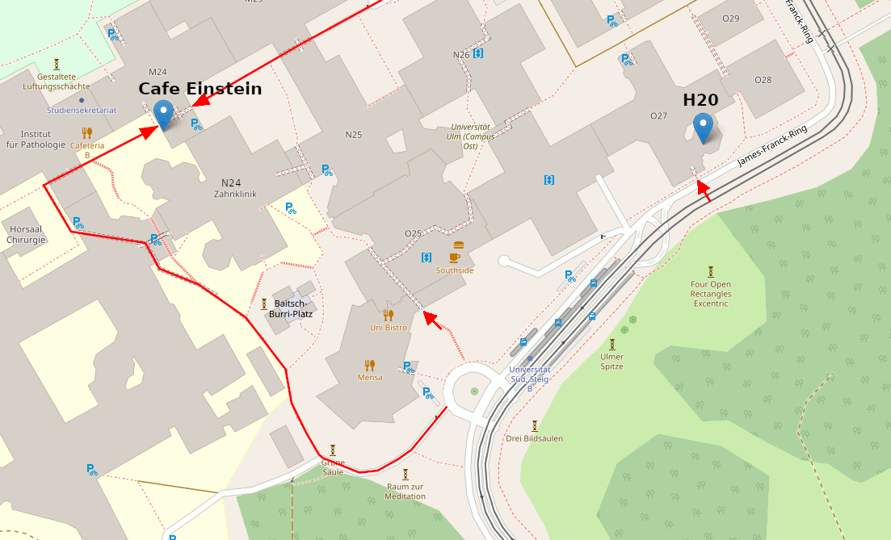

Die beste Möglichkeit Kontakt aufzunehmen ist einfach mal vorbei zu kommen:
- Donnerstags ab 20 Uhr sollte in der Regel offen sein.
- Per pedes: Platzgasse 18, Ulm, c/o FreeFM, Büchsenstadl oberste Klingel (Freiraum)
- Anfahrtsbeschreibung von free FM
-
Email: Einfach eine Nachricht an: vorstand (at) lists.hackerspace-ulm.de
-
Matrix: #freiraum
-
Github: frrm
-
Wiki: dokuwiki
-
Twitter: @freiraum_ulm
-
Facebook: HackerspaceUlm
-
Telefon: 0731 / 2806434
Mailingliste registrieren: http://lists.hackerspace-ulm.de/listinfo/info
Uni Ulm

- Cafe Einstein: Raum M24/242, im Durchgang N24 nach M24
OpenStreetMap Cafe Einstein - Hörsaal H20: im Gebäudekreuz O27
[OpenStreetMap H20](http://www.openstreetmap.org/?mlat=48.42277&mlon=9.95750#map=18/48.42277/9.95750" img="/contact/uni_h20.png")
Eingänge:
- Eingang Süd (mittiger roter Pfeil auf der Karte)
- Eingang am O27 (rechter roter Pfeil auf der Karte)
- Eingang direkt am Cafe Einstein (rote Pfeile oben)
- Wichtig: Nach 20:00 sind die Uni-Eingänge meist verschlossen, und man kann die Türen nur mit einer Studentenkarte öffen.
Solltet ihr vor der verschlossenen Tür stehen, dann:
- Cafe Einstein: meldet euch bei 0731 50 26012, oder geht von außen zum Cafe Einstein (siehe Karte) und klopft an die Scheibe
- H20: TODO
Anfahrt:
- per Fahrrad: Fahrradständer gibt es z.B. beim “Eingang Süd” oder an der ÖPNV-Haltestelle
- per ÖPNV: bis Haltestelle “Universität Süd”,
siehe auch: https://www.uni-ulm.de/einrichtungen/kiz/weiteres/campus-navigation/anfahrt-uni-ulm/anfahrt-oepnv/ - per Auto: siehe https://www.uni-ulm.de/einrichtungen/kiz/weiteres/campus-navigation/anfahrt-uni-ulm/